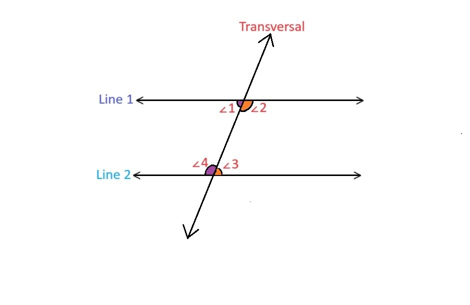
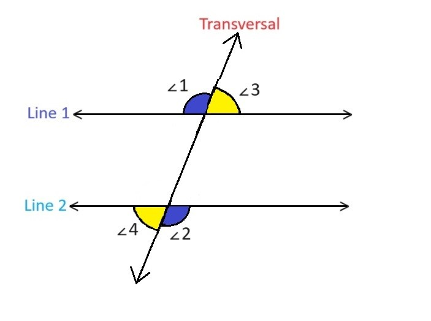

Co-interior angles:
Co-interior angles are formed on the inner sides of the transversal and are also known as consecutive interior angles or same-side interior angles.
Co-interior angles are defined as the pair of non-adjacent interior angles that lie on the same side of the transversal. These angles appear next to each other on the internal side of a transversal.

In the above figure, Line 1 and Line L2 are two parallel lines cut by a transversal. The pairs of co-interior angles in the figure are:
- ∠1 and ∠4
- ∠2 and ∠3
PROPERTIES:
- Co-interior angles have different vertices.
- They lie between two lines.
- They are on the same side of the transversal.
- They share a common side.
Alternate interior angles
When a transversal crosses two parallel lines, the pair of angles formed on the inner side of the parallel lines, but on the opposite sides of the transversal are called alternate interior angles. These angles are always equal.
Alternatively, we can also conclude that the alternate interior angles can prove whether the given lines are parallel or not. If these angles are equal, then the given lines that are crossed by a transversal are said to be parallel.
In the figure given above, the pairs of alternate interior angles are:
- ∠1 and ∠3
- ∠2 and ∠4
This means ∠1 = ∠3 and ∠2 = ∠4
Alternate exterior angles
When a transversal crosses two parallel lines, the pair of angles formed on the outer side of the transversal on the different sides.
In the given figure above, Line 1 and Line 2 are the parallel lines intersected by the transversal. Here, the alternate exterior angle pairs are:
- ∠1 and ∠2
- ∠3 and ∠4
This means ∠1 = ∠2 and ∠3 = ∠4